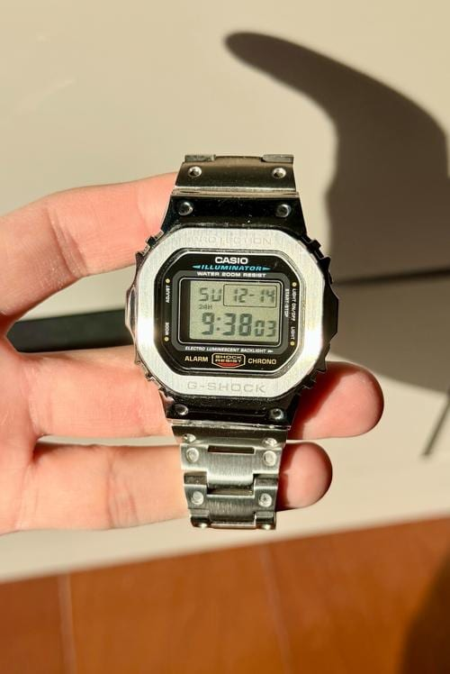

卡西欧 G-Shock DW-5600

方形防震经典，四十年不变的可靠工具表。
客观评测
DW-5600 采用经典方形树脂表壳，搭载卡西欧 3229 机芯，配备 1/100 秒秒表、倒计时、闹铃、全自动日历与世界时间。防震结构经久耐用，200 米防水远超游泳与浮潜需求。实走月差约 ±15 秒，属石英表正常水平。液晶屏在阳光直射下读数清晰，负显版本夜间对比度稍弱。以今天的眼光看配置十分朴素，但每一项参数都围绕可靠耐用设计，无一多余功能。
主观点评
方块造型自 1983 年沿用至今几乎未改，本身就是一种设计自信。上手轻若无物，树脂表带偏硬但佩戴几日后逐渐服帖。它不推送消息、不测心率，却让人莫名安心：换颗电池就是三五年，随手一戴就能出门。对很多表友而言，DW-5600 是"第一块真正的表"或"最后一块退烧表"，情怀加成极高，代表工具表该纯粹的价值观。
优点与不足
- 200 米防水加防震结构，几乎摔不坏
- 一颗电池用五年，零维护成本
- 方块造型辨识度极高，潮流百搭
- 无任何智能功能
- 树脂表带初期偏硬
- 基础版无背光，夜间读时不便
参数规格
| 屏幕 | FSTN 液晶屏（部分版本带 EL 背光） |
|---|---|
| 机芯 | 卡西欧 3229 石英机芯 |
| 传感器 | 无（纯计时功能） |
| 定位 | 不支持 |
| 防水 | 200 米防水 |
| 电池/续航 | CR2016 纽扣电池，约 5 年 |
| 耐用性 | 防震结构，树脂表壳 |
| 功能 | 秒表、倒计时、闹铃、全自动日历、世界时间 |
| 表壳尺寸 | 48.9 × 42.8 × 13.4 毫米 |
| 重量 | 约 53 克 |